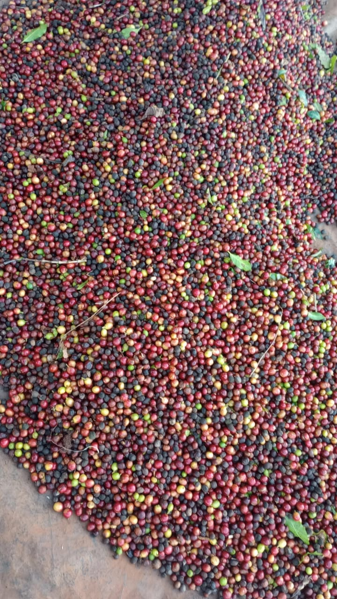
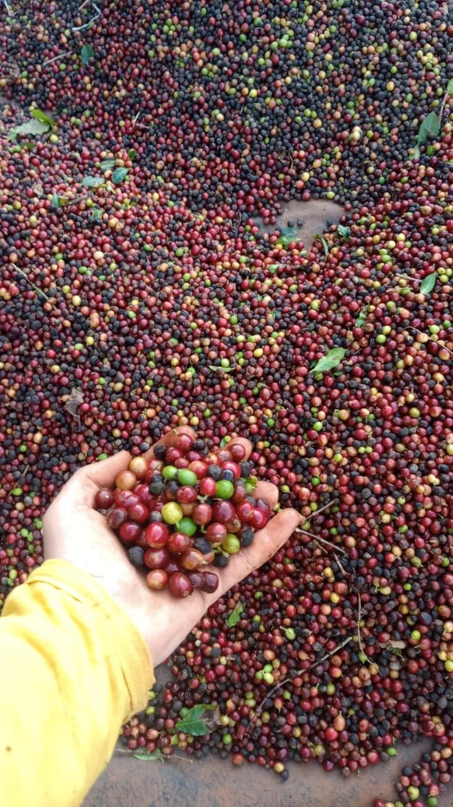
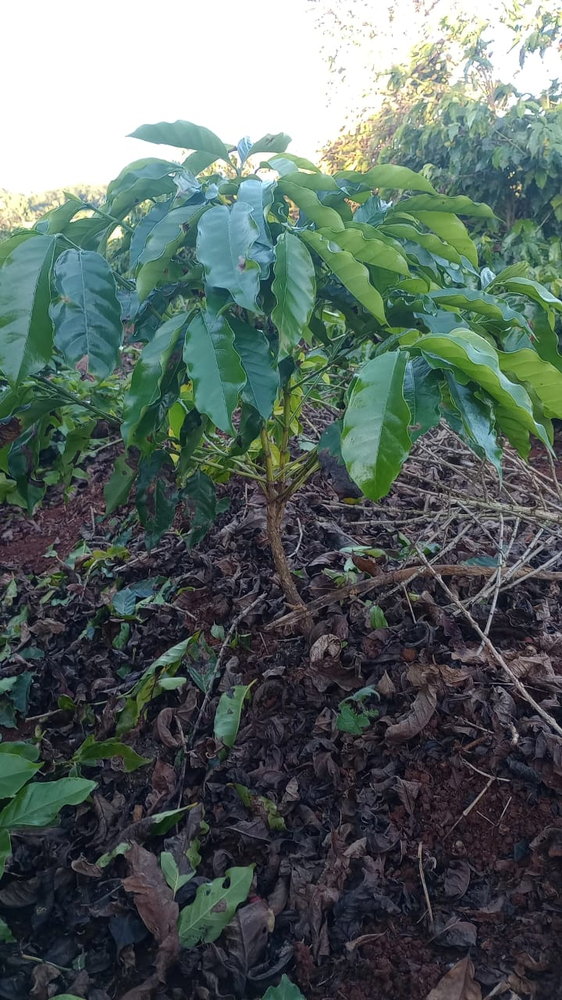
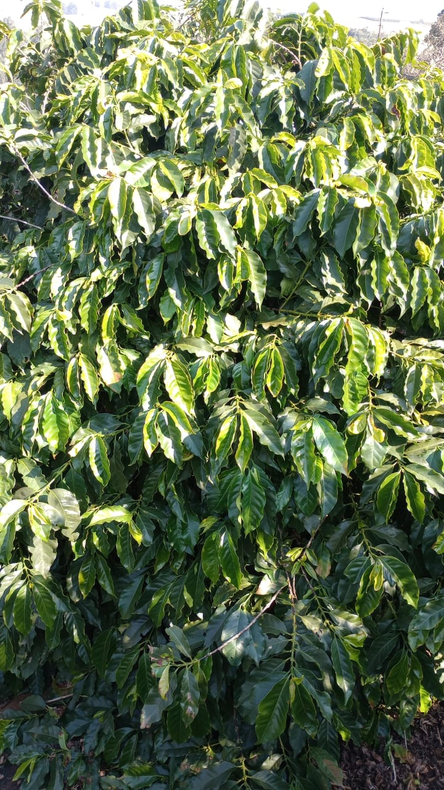
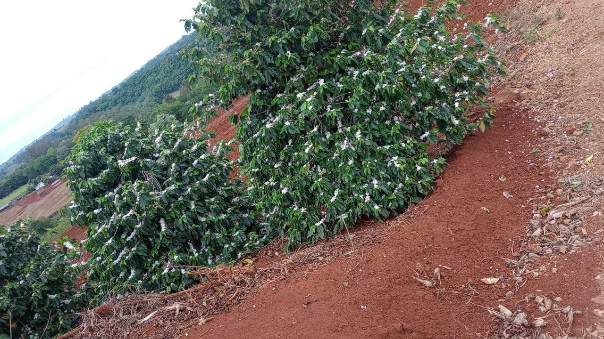
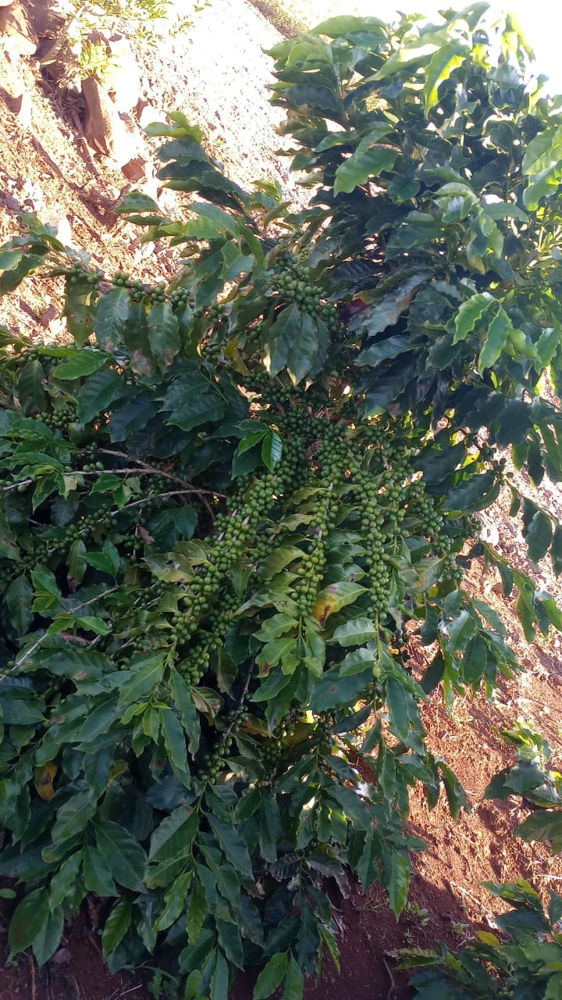
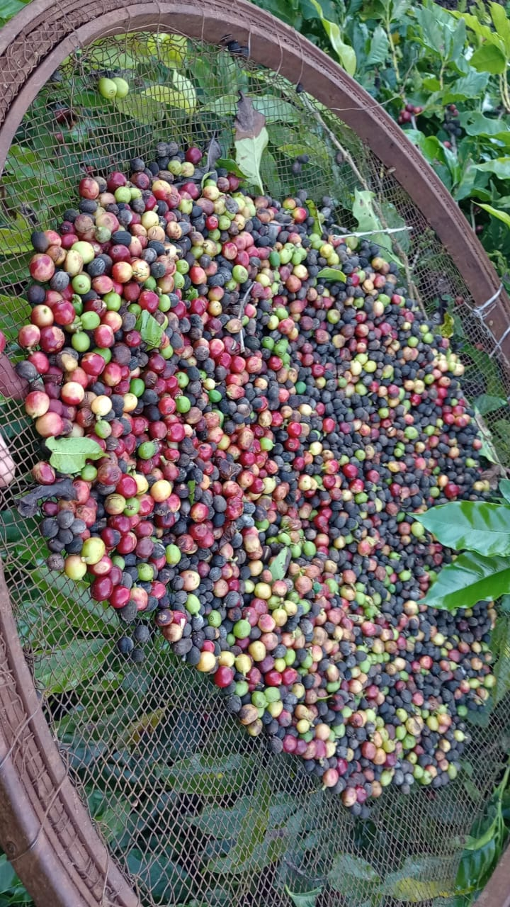

"Sou estudante e trabalho com o café no meu sítio, vivendo de perto a força e a beleza desse cultivo.
A conexão entre o campo e a cidade, através do café, movimenta a economia do nosso estado, gera empregos e leva a qualidade do Paraná para o mundo.
Mais do que um produto, o café representa a dedicação das famílias que trabalham na terra e a inovação que transforma o setor.
É um orgulho saber que, com o meu trabalho, faço parte dessa história que une tradição, desenvolvimento e futuro."
A produção do café.



"O café é a poesia que nasce da terra, o perfume que atravessa gerações e a força silenciosa que ergueu cidades.
No Paraná, ele floresceu entre mãos calejadas e corações esperançosos, transformando paisagens e destinos.
Cada grão carrega a memória do passado e a promessa do futuro, aquecendo almas e celebrando a vida.
O café não é apenas cultivo — é herança, é orgulho, é o elo invisível que une a terra ao mundo."
O Ciclo do Café.
1. Plantio das Mudas
Tudo começa com o cuidado ao plantar as mudas, escolhidas com atenção e carinho.
É quando a terra abraça o futuro e a esperança cria raízes. Cada muda plantada carrega a promessa de um novo ciclo.

Crescimento e Manejo
Com o tempo e o cuidado, a planta cresce. Poda, adubo e proteção fazem parte do caminho.
É a fase silenciosa, onde a dedicação prepara a força dos frutos que virão.

Florada
A florada é poesia no campo. As flores brancas cobrem os galhos como um manto de esperança.
É o sinal da natureza de que a colheita está por vir — e o perfume no ar confirma: o ciclo está vivo.

Frutificação e Maturação
As flores dão lugar aos frutos, que lentamente mudam de cor até atingirem o ponto ideal. É o tempo da paciência, da observação e do cuidado — onde o sabor começa a nascer.

Colheita
A colheita é o encontro da espera com a recompensa. Grão por grão, os frutos são retirados com atenção.
Cada cesto cheio carrega o esforço de meses e a alegria de ver o café ganhar forma.
6. Secagem nos Terreiros
No terreiro, o café repousa ao sol. É espalhado, revirado e vigiado com carinho.
Aqui, o grão perde a umidade, mas ganha alma — e começa a revelar o sabor que encantará o mundo.
O café nasceu nas montanhas da Etiópia e, com o tempo, atravessou o mundo, conquistando povos e corações.
Chegou ao Brasil no século XVIII e encontrou nas terras férteis o clima perfeito para florescer.
No Paraná, se firmou como riqueza e identidade, transformando paisagens e fortalecendo comunidades.
Da muda ao grão, é cultivado com mãos cuidadosas e corações esperançosos.
Sua florada anuncia vida, sua colheita celebra conquistas.
Mais que uma bebida, o café é símbolo de cultura, trabalho e tradição.
Ele conecta campo e cidade, passado e futuro, em um aroma que emociona.
Cada xícara carrega histórias silenciosas e o sabor da terra.
O café é herança viva, feita de chão, de gente e de tempo.
E em cada gole, o Paraná segue contando essa história com orgulho.
"Meu café nasce do amor pela terra e floresce no calor de quem acredita no amanhã."